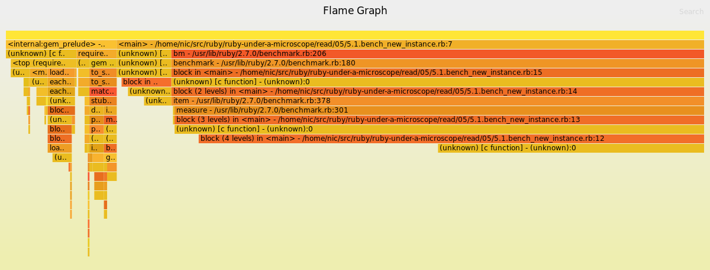
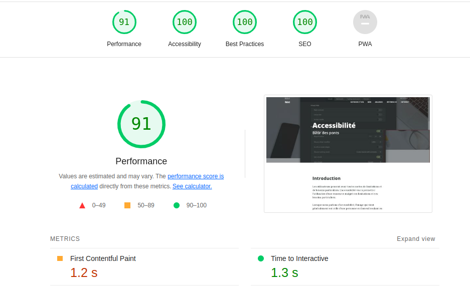

Introduction
Voyons c'est bien long.
Dans un monde où le motto est toujours plus vite et où la patience est de moins en moins cultivée, le temps d'attente après une application ou un site web devient important. Et s'il est trop long, l'utilisateur va aller voir ailleurs. Mais comment réduire ce temps ? Il fut un temps où les développeurs se cassaient la tête. Puis, la montée en puissance des ordinateurs a entraîné une certaine paresse de ce côté. Avec l'avènement du mobile, la performance est redevenue un élément à considérer. Heureusement, il existe des outils pour nous y aider.
Code
Suivre un programme à la trace, dans un debuggeur par exemple, nous permet de prendre conscience de tout ce qu'il fait. Il y a une différence entre croire et savoir. Et parfois nous avons des surprises, le code ne faisant pas ce que nous croyons qu'il fait. Un profileur est un outil qui permet de générer un rapport d'analyse de l'exécution d'un programme. Par exemple, toutes les fontions appelées et toutes les entrées et sorties effectuées. Doté de ce savoir, il est alors possible de s'attaquer à ce qui est le plus coûteux en terme de performance. Autrement dit, optimiser le programme.
 Exemple de rapport généré par rbSpy.Afin de pouvoir faire un bon travail, il faut comprendre comment fonctionne le système sur lequel le programme s'exécute et les différentes composantes qu'il emploie, comme une base de données ou un service web.
Web
Lorsque j'ai lu High Performance Web Sites il y a de nombreuses années, ce fut une révélation. J'ai alors réalisé que je devais comprendre comment le navigateur fonctionnait afin de pouvoir faire de bons sites web. Car il a une façon bien à lui de travailler. Et celle-ci a évolué dans le temps. Soit nous travaillons avec lui, soit nous travaillons contre lui.
Heureusement, des outils ont également été développé pour nous aider en ce sens, comme DevTools.
 Rapport de performance de DevTools.
Rapport de performance de DevTools.
Lighthouse est encore plus simple à utiliser, donnant un rapport détails des problèmes et des solutions possibles pour ceux-ci.
 Rapport de Lighthouse.Peut importe l'outil, c'est ce qu'en fera le développeur qui donnera un bon résultat ou non. Et pour cela, c'est la pratique qui amènera l'expertise.